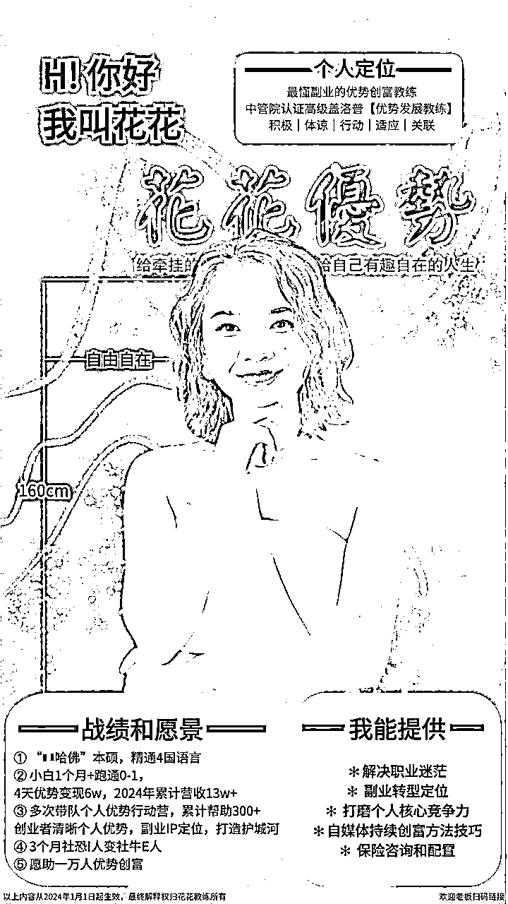
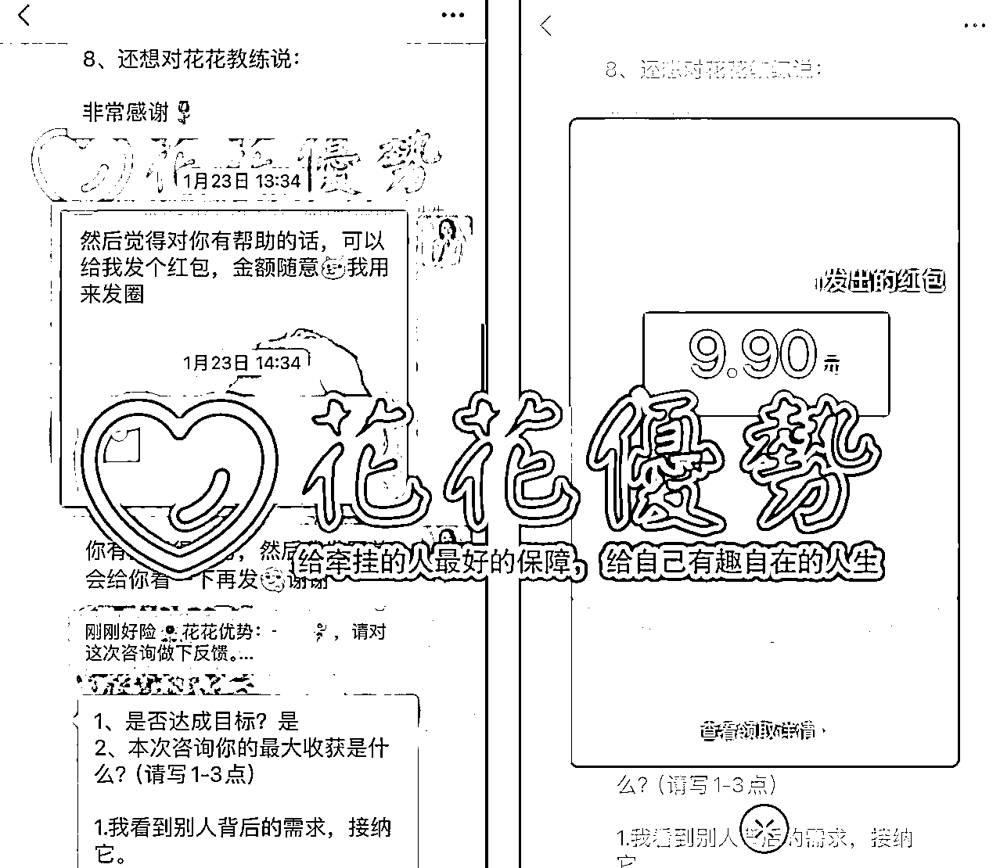
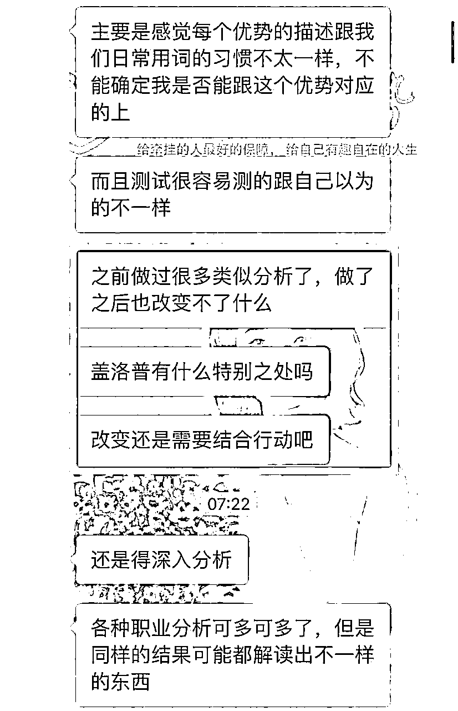
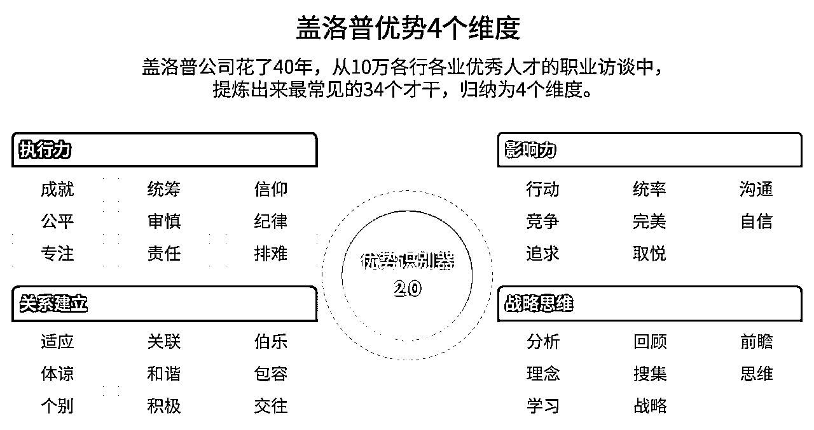
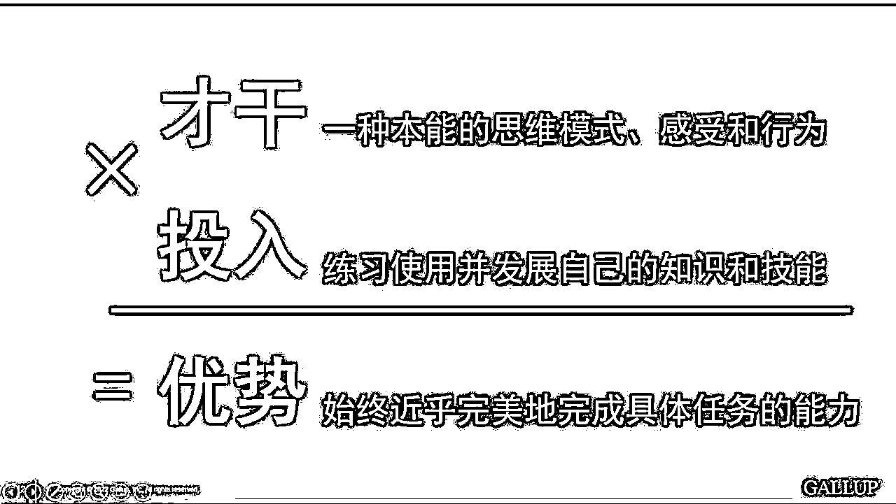
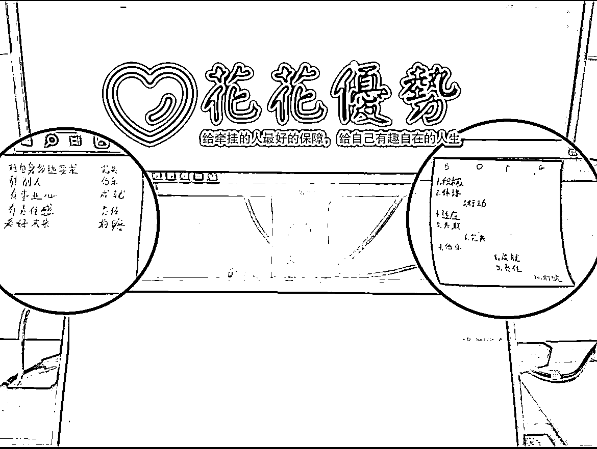
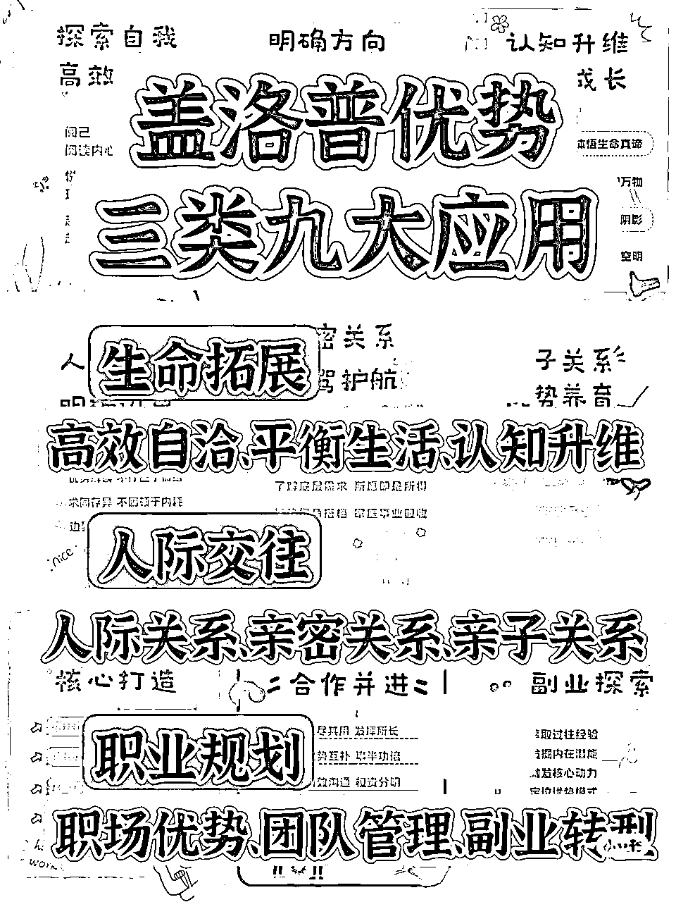
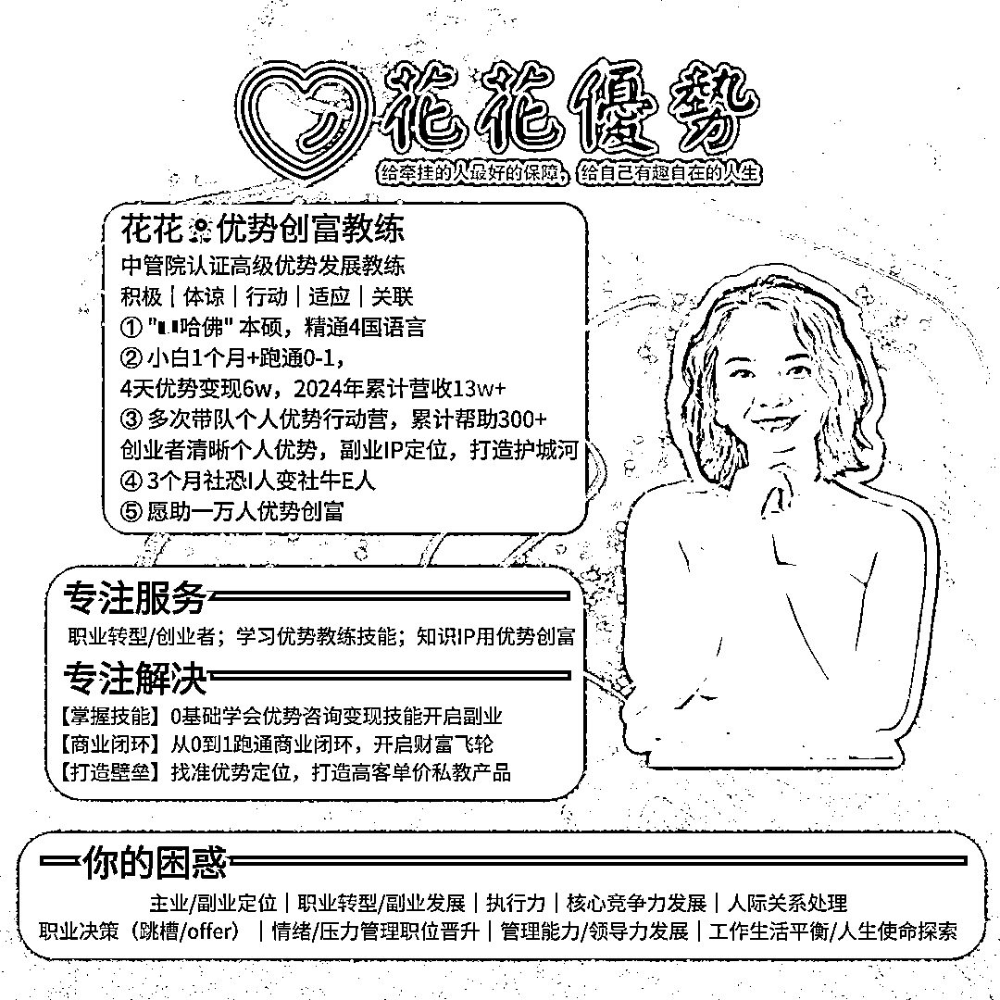

来源：https://lxfgt1wpdnk.feishu.cn/docx/FexPdcxROoiK32x0gK7c02p4nrd
大家好～ 我是花花，坐标德国/温州，90后外企打工人。
我以3个标签介绍一下我自己：
① 一名经过中管院认证的盖洛普优势创富教练。专注服务普通人和创业者们发现并充分发挥他们的优势潜力，帮助他们解决在创富道路上的各种挑战，包括但不限于定位、执行力和个人核心竞争力等方面。
② 2023年12月中正式开启了我的优势创富之路，我的愿景是协助一万人优势创富，开启自洽自富的人生。多次带队个人优势行动营，累计帮助300+创业者清晰个人优势，副业IP定位，打造护城河。
③ 盖洛普前5【积极｜体谅｜行动｜适应｜关联】，"🇮🇹哈佛" 本硕，精通4国语言，自媒体小白1个月+跑通0-1，4天优势变现6w，2024前4个月累计营收15w。
在2024年开始之前，我从来都没想过自己有一天真的能彻底摆脱迷茫和虚无感。我也从来没想过有一天我居然能给自己贴上这么多引以为豪的标签。
一切皆感谢盖洛普让我明白了怎么发挥我的优势潜力。
持续在自己的优势上发力，真的很香，也真的很容易拿到正反馈。

这次干货长文有近1万字，展现了我的轻创业经历和思考，毫无保留分享给大家，全程干货，真诚分享，希望对正在或即将创业/副业的你有用。
一、遇到盖洛普前的我
二、盖洛普的核心理念
三、优势聚焦，快速跑通0-1 三步曲
四、选行业赛道的三点心法
五、副业定位的2个五部曲
六、为什么优势咨询赛道是蓝海赛道？
好，我们先来看看我的成长路径哈：

总的来说，我对当前的结果还是挺满意的，因为我之前完全是自媒体小白。
当我开始做自媒体的时候，身边都是反对的声音。
有说我被PUA了的，有一声不吭删我微信的，说我搞传销的，有删之前给我留言说“我知道劝你没用，但还是希望你能回头是岸”的，爸妈也说我肯定是遇到杀猪盘/被割韭菜了。
但我知道我一定要开启创业，只靠打工永远没有出头之日。
我是从南方山里出来的姑娘，从小就喜欢跟大自然接触，去山上寻宝：跟哥哥姐姐们一起摘野果子呀，拔野菜给兔子啊，挖笋什么的。
尽管我在父母身边长大，但我们一直住在他们工作的工厂宿舍里。这种生活环境，加上父母忙于谋生，让我早早的学会了独立。尽管我羡慕其他孩子有父母陪伴，但我从未抱怨过。
周围的人让我懂得了生活的不易，尤其是对于那些条件不好的人。这也解释了为什么我的【体谅和积极】才干较为突出。
接触盖洛普之前的我是什么样的呢？
【1】没有目标，拧巴，想赚钱，想实现自我价值，但找不到抓手，只能发挥【适应】才干，选择（被迫）躺平，自我安慰。
2022-2023年，在我遇到盖洛普之前，可以说是人生暗淡，处于人生的又一个低谷。
做着一份不喜欢的工作，加上连续两次爱而不得，遇不到良人，作为大关系建立，情感受挫真的是伤害很大，一度陷入自我怀疑。加上30岁的门槛即将到来，无形的压力压的我喘不过气，但又没办法解脱。
想多赚点钱，给自己和家人更好的生活，还上我欠爸妈的钱，还想给自己有趣自在的人生。
有很长一段时间我都在想，或许我也只配一辈子浑浑噩噩的过了吧。
没有目标的生活，或许跟❌去也没什么太大的区别。
【2】主业违背我的靠前才干，令我痛苦不堪，但无法躲避。
我热爱旅行，我喜欢跟不同背景的人打交道，但是没有足够强的赚钱能力，只能乖乖的按部就班，天天打卡上班，拿死工资，还不敢辞职。
我是主业就是天天写报告。
这对于关系建立靠前的我来说真的是特别的痛苦难熬。
下班后也没什么特别的兴趣爱好来缓解这种痛苦，只能用电视剧来麻痹自己。
每天都要做着一份让自己无比耗能，天天怀疑人生的工作，但又不敢再次任性辞职，因为要承担家里的巨大经济压力，家里相当于都是老弱病残，就我一个劳动力。
【3】小白，两个月，三个定位，没结果，焦虑内耗。
作为大关系建立，没有教练的宏观视角，对自己不够了解，真的非常容易在商业的路上迷失，乱付费，越学越乱，越学越没结果。
我就是典型的一个例子。
加上【完美】才干的发挥，在知识付费这条路上真的是一去不复返。
我买了不少高客单产品，虽然这样让我进入了很高能量的好圈子
但可能对于我当下整体的需求和能力，这并不理智。
因为我当时就是纯小白，没有专业技能，智商也只是平均水平。
所以根本没能力把购买的资源立即利用好
当时的我还没现在这么情绪稳定，还是会自我感动，内心戏特别多，导致自己经常内耗，陷入痛苦的状态。
去年9月起，在短短的两个月内，我就经历了3次定位的变更：
从留学IP到小红书自媒体IP运营，再到儿童英语启蒙。
每次我都快速的下定决心要开始新的项目，乐观地开始，但很快就发现自己坚持不下去。
我知道坚持很重要，但就是做不到。
虽然身边有很多贵人能告诉我如何赚钱，但他们不了解我的内心。
我自己甚至都不知道自己内心真的渴望什么。
后来我才明白原来是因为我的自我认知和商业认知都不到位，尽管我经常自省，尽管我是商科本硕。
虽然我在2023年有过变现，但都不是稳定的，更多的是依靠运气和依赖他人的光环。
因此我经常感到焦虑，因为我不知道下一步具体该做什么，怎么做。
我意识到我需要有人手把手地引导我，给我保姆级的支持，否则我就会容易迷失方向，陷入内耗。
我希望可以早日实现自我价值，为自己为家人提供物质和精神上的支持。
但我梦想的这一切好像都无法实现，因为我不知道从何开始。
但是自从我认识了我的优势导师，深度学习了盖洛普的公开课后，我看到了指引我方向的那束光，我找到了我一直在找的那个抓手。
其实我很早就听说过盖洛普，而且我一开始还是挺抵触盖洛普的，觉得又是像 MBTI 那种测试， 测了也没啥用。而且我当时也认为自我的认知也挺清晰的了，不需要再做类似的测评了。
很多人会有错误的僵化思维，觉得盖洛普这类优势测评没用，内心OS“做了之后也改变不了什么。认识自己了然后呢？我还是比较关心解决方案”，“不想被这类测评定义”之类的想法。

自我了解越清晰，行动就越笃定。
现在我可以毫不夸张的说，是盖洛普拯救了我。
当然，一路上少不了贵人的托举。
有时候你可能觉得自己不满足现状，想要改变但不知道从哪开始。可能会羡慕别人的成功，感觉自己条件好，可为什么没那么顺利。
其实这很正常，特别是到了30-50岁，社会对我们的期望更高，犯错的代价也更大。有时候我们甚至不知道自己擅长什么，不清楚自己想要什么，这就很难找到心仪的工作和生活。
心理学家卡尔·罗杰斯曾说过："人的一切问题都在于不了解怎样看待自己。" 而荣格曾说过:“潜意识正在操控你的人生，你却称之为命运。”
性格决定命运。
你的性格塑造了你的选择，选择决定了行动，行动决定了结果，结果决定了命运。
掌控命运的走向，从了解自己开始。
盖洛普优势测评就可以很好的帮你更好地了解自己，发现和培养自己的优势。
它是美国盖洛普公司基于积极心理学，经过好多年的研究和数百万人的调查，在2001年发布的，所以它也被称为科学算命。全球现在超过 3000万人做过这个测评，每个人前 5 项才干一样的概率，是 3300 万分之一，所以这个测评的颗粒度和信效度，是其他测评无法相比的。
成功的道路千千万，但成功者有一个共同点，就是扬长避短。如果你不了解自己的话，就相当于你抱着一个金饭碗但却做的乞丐的营生。
测评报告会告诉你独有的四个才干领域和34项才干的排序（如图）

“才干”就是我们自然而然的思维、感受和行为方式。它是我们的个人特质，是我们的本色。我们每天的很多选择和对外界的反应，大部分都是出于习惯，也就是我们的“才干”在发挥作用。可以说：
【执行力 / 紫衣侠】
他们擅长把想法付诸实践，处理具体事务和执行任务方面有很大潜力。
【影响力 / 橙贵人】
他们往往是少见的，而且天生在人群中存在感很强，也喜欢占C位，我们很难无视他们。
【关系建立 / 蓝精灵】
他们的潜力在于建立牢固关系，将团队凝聚起来，发挥更大的力量。
【战略思维 / 绿巨人】
他们擅长收集和分析信息，挖掘事物的本质和规律，做出更明智的决策，预测未来趋势。
性格/本性的背后就是才干。例如，有些人从小就独来独往，喜欢思考，那这种就大概率属于战略思维靠前的。满足了前十的才干，会让人感到激励和充电；而不满足，则会感到痛苦和耗能。
所谓“成也才干，败也才干”
如果发挥的好，那才干就会成为我们的优势，也就是“持续保持近乎完美表现的能力”，形成“个人核心竞争力”。可如果发挥的不好，那么才干就是成为我们的弱点，成功路上的绊脚石。
这是我的盖洛普才干图（测评报告第21页），大家可以看到我是关系建立+ 影响力才干领域比较突出的。
很多来访者/学员会问我：“花花，我前15才干中没有销冠三件套，也就是【取悦、沟通、个别】，那么是不是代表我不能成为一个好销售呢？”
答案是真不一定。
哪怕你有销冠三件套，如果你没发挥好这三项才干，把他们变成优势的话，那么你也无法成为销冠。
当我们不了解自己时，看到别人行为不符合我们的期待时，容易责怪他人。其实，他们可能只是有不同的想法和能力。了解别人的内心需求，可以更好地沟通和达成目标。如果满足彼此的需求，就能避免很多矛盾。
所谓“知己知彼，百战百胜”，如果我们能够同时满足他人和自己的内在渴望，那么内耗和不自洽的情况就会减少。

测评报告里的才干是中性的，它们未必已经是你现在的优势，因为 【优势 = 才干 x 投入】。优势是保持近乎完美表现的能力，也就是大家经常所说的个人核心竞争力。
就拿优势教练这个赛道举例子的话，我们学员普遍在2-6个月内可以跑通商业闭环。我为什么可以1个月左右就快速跑通闭环了呢？
其实就是因为我把我的【成就、完美、行动和积极】发挥到极致了。
这段时间，我不管忙得多么疯狂，都全身心投入到学习中。找到了最高效的方法。
我把每天的空闲时间都用来学习，甚至包括上下班途中、午休和睡前的时间，还有周末。
我不去看社交媒体，每天至少发三条朋友圈，就算没人看，我也会发。
整个过程中，时间安排得满满的，虽然身体累，但精神却很充实，没有焦虑感。
每完成一个学习目标，我都感到很有成就感。
而且，越是学习，就越被每个人不同的才干所吸引。
然后我先是招募了三个志愿者，通过和他们进行咨询来练习自己的技能。
后来我开始在社交圈子里找公益咨询的人来做咨询。
终于，1 月 23 号我迎来了第一个付费咨询，收入9.9元。
现在我的收费已经涨到了499元每小时。
至今我已经为近50人提供了咨询服务，花了100多小时在这个事业上。
我一有机会，我就主动跟我的优势导师申请录音拆解，想尽办法把我的专业能力快速的提升上去。
现在，只要涉及到我的专业领域，我都能充满自信和自豪。
通过每天跟着行动营的优势教练们一起实践学习到的专业和商业知识，慢慢的把商业闭环的4大环节（产品，流量，成交，交付）的sop都内化了，正反馈也慢慢的多了起来。
这里也是，我一有机会就第一时间申请1v1的成交拆解，一步一步的让已经拿到过结果的人找出我的思维bug，然后自己再复盘，再锻炼。
就这样我在1个月+就跑通了商业闭环，在差不多3个月+的时间内就实打实的赚回了学习这门专业的学费（2w）。
所以【投入】真的很重要！
才干是你的潜力所在，前十才干（你的十把宝剑）决定你的优势或劣势。
没有足够的投入，学习、练习、实践不到位，十把宝剑也会变成废铁。
盖洛普可以帮你找到根本问题，但了解问题不等于解决问题。
你要做的是：通过盖洛普测评，了解自己，接纳自己和他人，管理情绪，投入和改变自己，打造自己的核心优势。
如果你没有决心去改变命运，没有想要变成更高版本的自己的渴望，那就没必要继续看下去了。
承认自己想要的，并为此投入时间和精力。
这才是靠谱的做法。
正如我的贵人梁靠谱所说：“有条件作恶但从不作恶，有条件放纵也极少放纵，斯人若彩虹，遇上方知有。”
“一个人的幡然醒悟，1%靠别人的劝说，99%靠千刀万剐。”
那么通过了解和实践盖洛普，你起码能被少剐几刀。
盖洛普测评码你可以上官网445购买或找教练购买410元。
越早完成盖洛普测评，越早培养自我认知与接纳他人，从而加速核心竞争力的打造，早日开启财富之路。

这是我贴在工作电脑上的便利贴。
👉右边是我的前十才干。
👈左边是我打算怎么利用我的前6至前10才干来对冲我的前五才干的阴影面和过度发挥的。
时刻提醒自己：优势 = 才干 x 投入
如果你是小白，那尽量选择蓝海赛道
但选择了行业赛道只是一部分，不代表你已经决定了自己的定位。
想要成功，最好先选一个你热爱的行业，如果没有就选你喜欢的，而不是只看钱。
以下3点也很重要：
确保你是可以长期坚持下去的，不会轻易放弃的。
像咨询师、护理、养老院、保险等领域是不错的选择，因为它们需要人的情感和管理技能。
对很多普通人来说AI更适合作为提效的工具，而不是自己的副业基本盘。
如果我们想做好副业，那就一定要知道虽然优势定位很重要，但商业认知也很重要。
副业或创业都需要个人定位，因为这有助于你明确自己的独特优势和价值所在，从而在市场上找到自己的位置。
如果人生是一场戏，那么前半场是在打工攒钱，后半场是用自己的方式实现自我价值。
通过副业或创业，你可以做自己擅长、热爱、对他人有用的事情来赚钱，这样就能更好地发挥自己的优势。
个人IP并不是单纯的立人设或贴标签，而是反映出你的优势和天赋。
做个人IP就是做自己。
当你有了个人IP，别人就是在为“你这个人”买单。
定位就像是你的存在根基和自信来源，没有定位就会导致失焦。
如果不明确定位，就会随波逐流，长期下去会出大问题。
所以，明确个人定位非常重要，它可以让你更专注、更有自信地追求自己的目标。
90%的人困惑在定位，但你不知道，自己缺的不是定位，而是基于自身优势的商业模式。
人们都在找定位，到底在找什么?在害怕什么?
在找“一定能成的路”，害怕“付出没有回报”
但高手，能接纳外界的不确定，也对自身价值非常笃定。
我在系统学习盖洛普教练技术之前，我就对自身价值 ～ 0，因为没有一项专业技能傍身。
好，那么定位其实应该从两个角度去切入：商业角度 & 优势角度。
简单，你需要回答5个问题：
为谁-客户画像(垂直+付费能力)？
提供什么产品/服务？
我的优势导师苏姐说：少则精，多则惑，创业 = 取舍
你得有一门主打产品，不能啥都做，啥都卖，那样只会让人觉你不专业。
好比说，你要是开了个店，就得有个明星产品，让人记住你，不然就会像泥牛入海一样消失。
一个好的产品是可以卖10年的长销品。例如可乐，老干妈，肯德基，iphone，茅台
如果一个产品不赚钱，你就直接换产品，那你底层的商业逻辑就搞错了。
解决什么问题，什么客户需求 / 痛点？
兴趣 vs 刚需？
只有刚需才能带来高客单成交。
客户为什么要选你？
你的IP，印象、背书（职业/学历/认证/成就事件）
案例、差异化、客户痛点和方案的契合度
如何赚钱？怎么才能离钱更近？
离钱最近的就是销售环节了。
无论你擅长什么，活出自己，就能产生影响力。
影响力会给你带来贵人和财富的。
⚠️ 表里如一，生活 = 创业，做个人IP = 做自己。
同样的教练，可以有不同的优势定位，每人可以有多个优势：
……
定位 = 把你的优势最大化
那你的短板怎么办呢？
可以通过优势互补（合作）或付费解决。
很多人会问我，“花花老师，我是xxx才干类型，我适合做什么工作/赛道？”
其实优势不能100%解决这个问题，我们需要看个整体。
但是盖洛普一定能帮你避坑！
才干/才干类型 --> 你不适合做xxx，因为你内心难受、不擅长，所以会坚持不下来、半途而废、“天生不爱干”。
例如，完美/积极靠前，你就不太适合做心理咨询，因为你本能的厌恶补窟窿，你不能长期跟低能量的人接触。
例如，分析靠后，你可能不太适合做跟数据打交道的工作
例如，战略思维要是得频繁的1v1维护用户，会很耗能。
……
所以违背才干行事 = 折腾半天、羡慕别人、最后无功而返。
其实我们想要持续创富，只需要具备这5点即可：
例如咨询/教练技能，销售技能，又或者它们的叠加（咨询/教练 + 销售）。
特别是对那些注重责任感的人来说，拥有一项自信的专业技能非常关键。
这可以让你更有底气地与他人交流，因为你知道自己的专业水平足够高。
就像做菜需要有食材一样，如果你没有一个核心技能，就很难取得令自己满意的成绩，也很难建立起强有力的个人IP。
但如果你既能提供专业价值，又能提供情感上的支持，那么你基本上不用担心无法成功。
卖东西嘛，不管是别人的还是自己的，关键在于解决客户的问题。
产品可以分成三种：吸引顾客的、价格中等的、价格高的。
但无论是哪种，重点是要解决客户相对应的痛点。
别当推销员，那样你就会处于下风。
要当问题解决专家，你介绍的产品只是解决方案的一部分。
如果你是小白，最好不要同时销售超过两种不同类型的产品（除非你像百万级大佬那样牛）。
你知道怎么获取稳定的流量吗？来源是什么？公域/私域？
你怎么建立你的IP信任感呢？
一般不太建议普通人0-1阶段就进入公域。
很多人甚至在自己都不知道要卖什么的情况下，就去all in搞流量，最后流量来了，却不知道怎么变现，就这样浪费了。
你要精进自己的转化能力，也就是成交能力，或销售能力。
很多时候，你无法拿到商业结果的底层原因不是没客户，而是：
① 你没高客单产品
② 你没销售转化的承接能力
你的交付具体包括什么呢？什么价位的产品匹配的是轻还是重交付呢？
你计划如何帮更多客户拿到结果呢？
以上任何一个环节的缺失，你整个的商业闭环就是跑不起来，赚不到钱的。
这里就得用到我的优势导师苏姐给的定位咒语啦！
“用适合你的方式/节奏、在匹配你的人际氛围、做你擅长且对他人有价值的事情，销售实体或虚拟产品/专业知识技能/权益或服务，以满足客户/内部团队的特定需求。”
例如：
花花，优势创富教练，关系建立+影响力才干突出，适合跟人1v1深度交流，需要依靠一个氛围好的平台，不太擅长独自完成长远的复杂的商业布局/产品打造迭代/内容赋能（需要外脑），
2C：将优势创富 解决方案 销售给想做副业，职场转型客户。
2B：将优势团队用人 解决方案 销售给企业客户。
我确定自己想成为优势创富教练，因为这符合我的才干和兴趣。
只有通过精准的优势定位，顺应自己的才能，才能坚持下去。
否则，即使你勉强坚持下去，你也会备受煎熬，不断怀疑自己，难以获得正面反馈。
优势咨询赛道就属于一个蓝海赛道。
为什么？
多元化的应用场景，优势教练的前景是很发展的。
图中大家可以看到盖洛普优势的三类九大应用

现在整个大环境是挺不确定的。
很多我的来访者是做互联网做产品的，那他们同事之间私下交流不少，都是对职业发展、职业转型有很多的焦虑。
30-35职场的下半场都会有危机感，大家都在探索副业或说职业转型的这个可能性。
那很多人其实是直到被裁员降薪才发现自己一点准备都没有，最后被生活毒打毫无还手之力。
所以说要在天晴时修屋顶
也许你现在主业还可以，但是经济、行业、企业它都有周期
只有【人】才能成为打败周期的超级个体。
盖洛普测评已经有超过3000万人参与了。大约有一大半的世界500强公司都在用盖洛普来给自己的高管培训他们的领导力。
十年前盖洛普进入到中国市场，但目前只有50万人参与了，不到全球总数的2%，所以还有很大的提升空间。未来随着人们对个性化发展的关注增加，尤其是年轻人追求自我特色的趋势，盖洛普的测评会越来越受欢迎。
在2000年，职业规划师这个行业就开始在国内兴起了。现在，这个领域的专业人士已经达到了几万到十几万人的规模。
真正从事这份工作的人可能也就几万人。
在心理咨询师这个领域，虽然有几百万人拿过证书，但真正专注于这一工作的人并不多。
而国内的优势教练数量最多也就几千人，所以现在进入优势赛道，作为先驱者，你会有一定的红利存在。
优势教练的能力可以反哺你的主业，拓展副业
盖洛普教练技能是个很好的抓手，它可以跟很多其他的赛道/技能进行叠加
一共是3个部分：
帮助对方准确理解自身的才干跟才干组合，理解他们工作生活中各种现象跟自己才干之间的关系。
不管说这些现象是让这个人取得了成就，
还是阻碍了他的发展，比如说像是迷茫、纠结、缺乏动力、找不到方向、人际关系的困惑等等。
对于一个人来说，准确找到自己的病根，问题也就解决了一大半。
帮助对方在理解才干的基础上，找到解决自身问题的策略跟方法，以及实现他想达成的目标。
向内求，而不是向外求
不是说去提供标准答案，而是通过挖掘对方的独特性，帮助他个性化地辅导跟解决问题，来实现目标。
互相如何去发挥优势，配合达成共同的目标
那像世界 500 强当中有一半的企业都在使用盖罗普优势测评（谷歌、Facebook，他们都会用在内训，还有领导力发展方面）
优势教练的工作方式有：1v1的咨询辅导、线上线下、1对多的团体辅导、培训工作坊等等
优势教练 = 轻成本的知识型创业
你真的认可盖洛普的价值，并且你希望帮助更多人从优势的角度去解决他们的困惑。
你认同了之后盖洛普的价值之后（对你，对别人），你有持续学习的准备（终身成长者的自觉性）。
学习这件事对你来说，它应该是一个快乐的事情，它不能是个很痛苦的事情
你并不需要特殊优势才干成为一名优秀的教练，重点在于你对帮助他人成长和自我探索的兴趣。
只要你相信这个过程的价值和动力，就可以成为一位出色的教练。
你擅长发现别人的闪光点，并且这种能力会让你感到满足。
你希望开展一项副业，能够独立地带来收入。
在你看来，帮助孩子和他人找到自己的价值和使命是无价的。
优势教练的能力可以反哺你的主业，拓展副业。
学习优势教练的技能并不一定意味着要成为一名专业的优势教练。
很多管理者或老板之所以学习这项技能，是因为他们希望更好地辅导团队成员，提升团队的绩效。
学会优势教练的技能可以让你拥有独特的视角和竞争力，在公司中建立更广泛的人脉，并获得之前未曾想象到的机会。
逐渐你会发现自己拥有了一双慧眼，让别人更加信服和信任你。
这些技能也会为你增加附加值，让你在主业脱颖而出，成为你的核心竞争力之一。
如果你追求的是稳定，那么你就会得到稳定的职位，稳定的穷，和稳定的受到社会打压。
只有当你的独立赚钱能力和商业能力都打的很扎实的时候，不管你生活中发生什么事情，你都能做到从容不迫的。
这才是成年人的尊严所在。
真心希望大家都能：
给牵挂的人最好的保障；
给自己有趣自在的人生；
持续的成人达己。
只有持续的发挥自己的优势才能持续创富呀❗️❗️❗️
以上就是我的全部分享啦
谢谢你花时间读到这里。
如果这次的分享任何一个部分给了你信心或者启发，在未来给你带来多一些的业绩，我将不甚荣幸。
让我们一起在优势海洋里乘风破浪，赚得盆满钵满，一起成人达己！！！
